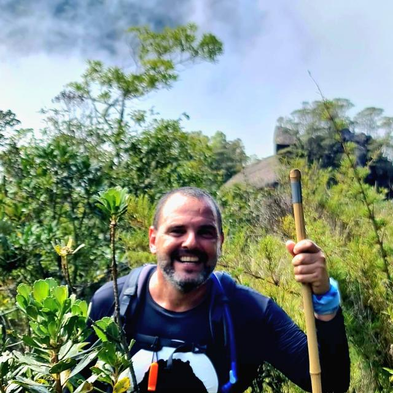

{{ r.nivel }}
{{ r.local }}
{{ r.nome }}
{{ r.nota }}
Niterói e todas as suas belezas naturais
Enquanto o mundo receita pílulas para te desligar ou te acordar, oferecemos a pílula verde: aventuras guiadas para se reconectar com você mesmo.
A montanha não pede pressa.
Ela pede presença.
{{ s.num }}
{{ s.label }}
Escolha sua próxima aventura
{{ r.nota }}

Segurança em primeiro lugar
Guia local, pé na terra e caderno de campo. Cada saída é planejada com margem de tempo, plano B de clima e ritmo do grupo — não do relógio.
{{ s.texto }}
Avisos de vaga, ponto de encontro e mudanças de data em cima da hora — todas as aventuras no mesmo grupo do WhatsApp.